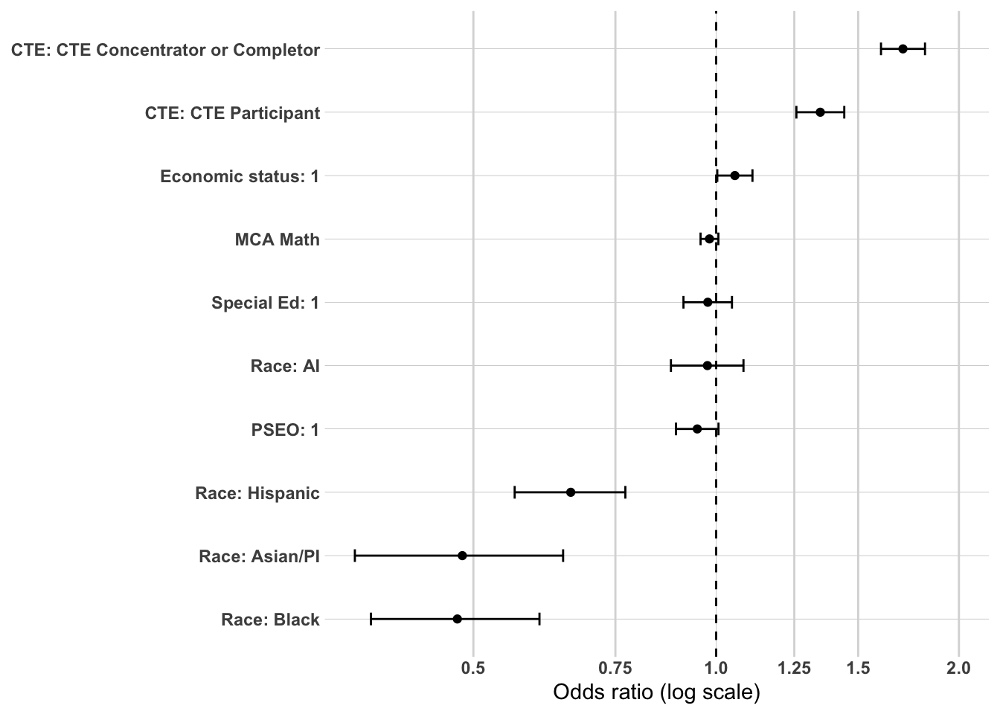
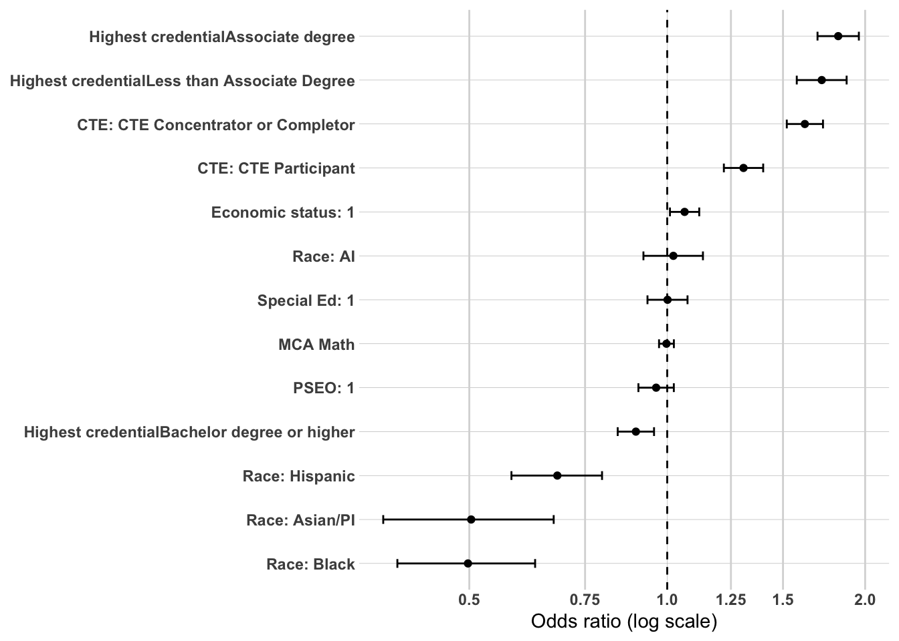
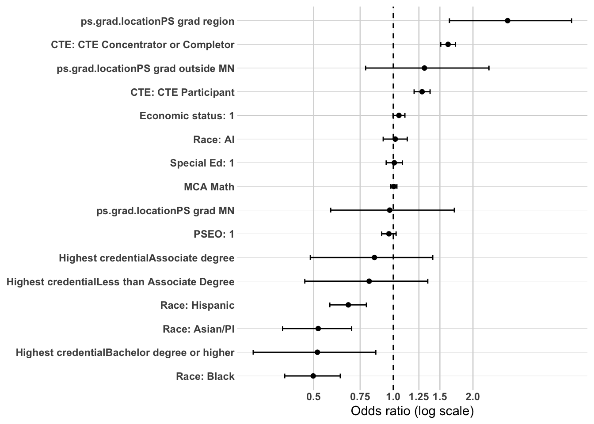
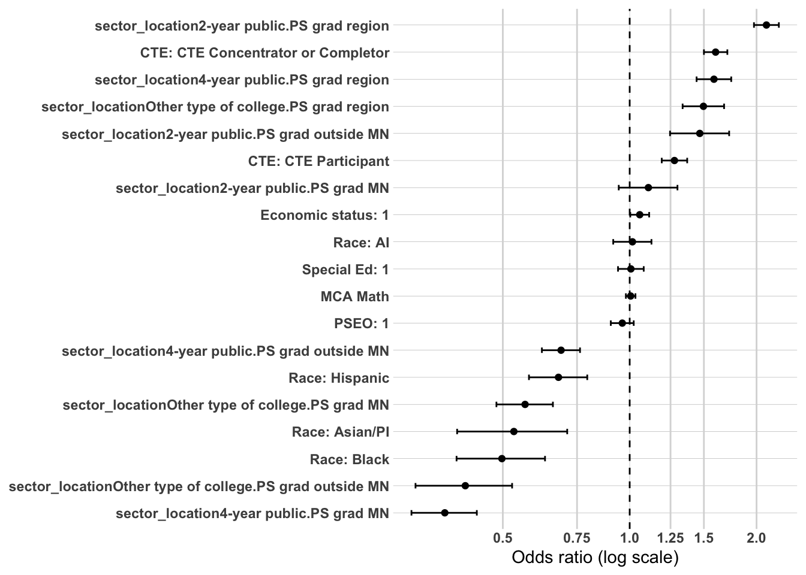
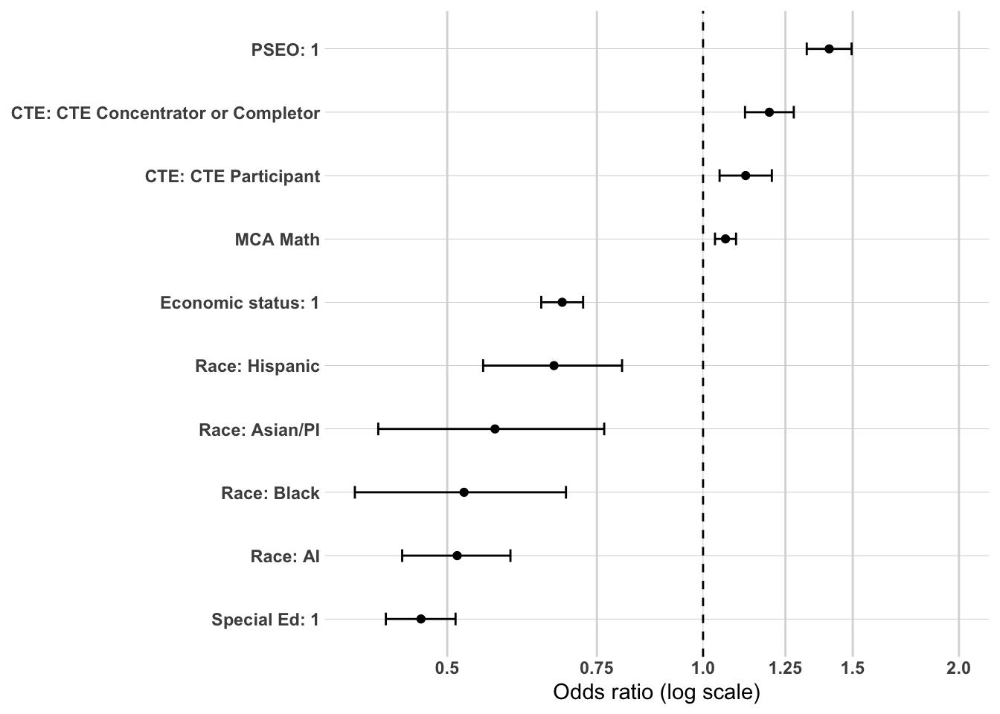

The primary purpose of this project is to explain who and what characteristics of individuals enter the various workforce participation pathways - Meaningful workforce participation in the region, Meaningful workforce participation outside the region but in Minnesota, Not meaningful workforce participation, and having No Minnesota employment record (either working in another state or simply not participating in the labor force). The policy of most concern is what relationships exist with an individual that has meaningful workforce participation in the region. Earlier sections used bivariate analyses (cross-tabulations, Cramér’s V, and ANOVA) to identify patterns of stratification across workforce participation. One large takeaway is that postsecondary outcomes are significantly related to workforce participation outcomes - especially whether they completed college, where they completed college, type of postsecondary institution, and highest earned credential. These analyses consistently showed that academic readiness, early college exposure (PSEO), and structural demographic factors were strongly associated with pathway entry.
To strengthen confidence in these findings, a limited multivariate analysis is conducted using logistic regression. The purpose of this modeling is not to establish causality or create a forecasting tool, but to examine whether the strongest bivariate relationships remain directionally consistent when key variables are considered simultaneously. This step helps address questions such as whether PSEO remains associated with sustained regional employment after accounting for academic readiness, or whether CTE participation retains influence when controlling for socioeconomic status.
Logistic regression is used here as a confirmatory tool rather than the central analytic framework.
Methodology
Outcome Variable
The primary model predicts:
Sustained employment – region (binary outcome)
The dependent variable is coded as:
1 = Sustained employment – region
0 = All other workforce outcomes (including sustained employment – MN outside the region, non-sustained employment, and no MN employment record)
This specification focuses directly on stable regional workforce attachment.
Independent Variables
To maintain interpretability and avoid overfitting, analysis will include a limited set of theoretically and empirically important predictors identified in earlier analyses:
Strongest predictors
Postsecondary
ps.grad
highest.cred.level
ps.grad.InstitutionSector
ps.grad.location
high school accomplishments
pseo.participant
ACTCompositeScore
MCA.M
cte.achievement
Demographic
RaceEthnicity
economic.status
SpecialEdStatus
Variables were selected based on:
Strength of association in prior bivariate analyses
Policy relevance
Conceptual clarity
Avoidance of redundant or highly collinear measures
These variables represent the full set of predictors examined across a series of structured logistic regression models. They are not entered simultaneously; rather, postsecondary variables are evaluated in separate specifications to avoid redundancy and to isolate distinct mechanisms (attainment depth, institutional sector, and geographic completion location).
High school contextual variables (EDR, rural classification, county unemployment, county wages) are excluded due to consistently weak relationships in earlier analyses.
Analysis Approach
This multivariate analysis is structured as a series of theoretically guided logistic regression models designed to examine mechanisms associated with sustained regional employment. The goal is not prediction or causal estimation, but confirmatory testing of patterns identified in earlier bivariate analyses.
The dependent variable is a binary indicator of Sustained employment – region (1 = sustained employment in the region; 0 = all other workforce outcomes). This specification focuses specifically on long-term regional workforce attachment rather than employment more broadly.
Modeling Strategy
Rather than estimating a single fully saturated model, predictors are introduced in a structured sequence to evaluate distinct mechanisms and to assess coefficient attenuation across specifications. This staged approach strengthens interpretability and reduces redundancy among highly related postsecondary variables.
Model 1: Structural and Preparation Baseline
The first model includes demographic and high school preparation variables:
RaceEthnicity
economic.status
SpecialEdStatus
pseo.participant
ACTCompositeScore
MCA score (single strongest or composite measure)
cte.achievement
This baseline model evaluates whether structural background and academic readiness are independently associated with sustained regional employment.
Model 2: Educational Attainment Mechanism
The second model introduces:
highest.cred.level
This model tests whether credential depth explains regional attachment beyond preparation and demographic factors. Changes in coefficients from Model 1 to Model 2 are examined to assess attenuation and potential shared pathway mechanisms.
Model 3: Institutional Pathway Mechanism
In a separate specification, credential level may be replaced with:
ps.grad.InstitutionSector
This model evaluates whether type of postsecondary institution (e.g., 2-year public, 4-year public, other) is associated with regional workforce retention, independent of preparation factors.
Model 4: Geographic Completion Mechanism
A final specification introduces:
ps.grad.location
This model tests whether completing postsecondary education within the region is associated with sustained regional employment, holding other factors constant. Given prior findings, graduation location is expected to be one of the strongest predictors.
Evaluation Criteria
Results will be reported using:
Odds ratios
95% confidence intervals
Statistical significance levels
Directional interpretation
Model comparison metrics (AIC and pseudo R²) will be used to assess relative improvement across specifications, but emphasis will remain on coefficient stability and magnitude rather than overall model fit.
Interpretation Framework
Interpretation will focus on:
Direction and relative magnitude of associations
Changes in coefficients across models
Evidence of attenuation when postsecondary variables are introduced
Findings will be described as associations holding other included variables constant. No causal claims will be made.
This structured approach allows for evaluation of three central mechanisms underlying sustained regional employment:
Preparation (academic readiness and early college exposure)
Attainment depth (credential level)
Geographic and institutional pathway (where and how postsecondary education was completed)
Together, these models provide multivariate confirmation of patterns identified in earlier descriptive analyses while preserving conceptual clarity and interpretability.
Prep data
The first thing I need to do is setup my dataset for modeling. I’m going to create the workforce participation into a binary and will use grad.year.5 as my modeling year.
master.model <- master %>%select(PersonID, ps.grad, highest.cred.level, ps.grad.InstitutionSector, ps.grad.location, pseo.participant, MCA.M, cte.achievement, RaceEthnicity, economic.status, SpecialEdStatus, grad.year.5) %>%filter(grad.year.5!="After 2023", grad.year.5!="Attending ps", ps.grad !="Attending ps",!is.na(ps.grad.location)) %>%mutate(grad.year.5 =ifelse(grad.year.5%in%c("Meaningful emp region", "Meaningful emp County", "Meaningful emp EDR"), "Meaningful emp region", grad.year.5),grad.year.5 =str_replace(grad.year.5, ", not attending ps", ""),grad.year.5 =ifelse(grad.year.5=="Meaningful emp region", 1, 0),RaceEthnicity =fct_relevel(RaceEthnicity, "White"),cte.achievement =fct_relevel(cte.achievement, "No CTE"),pseo.participant =ifelse(is.na(pseo.participant), 0, pseo.participant),pseo.participant =as.character(pseo.participant),pseo.participant =fct_relevel(pseo.participant, "0"),economic.status =as.character(economic.status),economic.status =fct_relevel(economic.status, "0"),SpecialEdStatus =as.character(SpecialEdStatus),SpecialEdStatus =fct_relevel(SpecialEdStatus, "0"),ps.grad =fct_relevel(ps.grad, "No"),highest.cred.level =fct_relevel(highest.cred.level, "Did not graduate ps"),ps.grad.InstitutionSector =ifelse(ps.grad.InstitutionSector =="1", "4-year public",ifelse(ps.grad.InstitutionSector =="4", "2-year public",ifelse(ps.grad.InstitutionSector =="11", "Other type of college", "Did not graduate ps"))),ps.grad.InstitutionSector =fct_relevel(ps.grad.InstitutionSector, "Did not graduate ps"),ps.grad.location =ifelse(ps.grad.location %in%c("PS grad region", "PS grad EDR"), "PS grad region", ps.grad.location),ps.grad.location =fct_relevel(ps.grad.location, "Did not graduate ps"))kable(head(master.model))
PersonID
ps.grad
highest.cred.level
ps.grad.InstitutionSector
ps.grad.location
pseo.participant
MCA.M
cte.achievement
RaceEthnicity
economic.status
SpecialEdStatus
grad.year.5
1621067
Y
Bachelor degree or higher
4-year public
PS grad outside MN
1
4
CTE Participant
White
0
0
0
2500266
No
Did not graduate ps
Did not graduate ps
Did not graduate ps
0
1
CTE Concentrator or Completor
White
0
1
0
11991652
Y
Bachelor degree or higher
4-year public
PS grad region
0
3
CTE Concentrator or Completor
White
0
0
0
5653948
Y
Bachelor degree or higher
Other type of college
PS grad MN
1
4
CTE Participant
White
1
0
0
9533044
No
Did not graduate ps
Did not graduate ps
Did not graduate ps
0
2
CTE Concentrator or Completor
White
0
0
0
11507369
No
Did not graduate ps
Did not graduate ps
Did not graduate ps
1
4
CTE Participant
White
0
0
1
kable(names(master.model))
x
PersonID
ps.grad
highest.cred.level
ps.grad.InstitutionSector
ps.grad.location
pseo.participant
MCA.M
cte.achievement
RaceEthnicity
economic.status
SpecialEdStatus
grad.year.5
We now have 36,976 individuals to model with 10 variables not including grad.year.5.
Now I want to create an MCA z-composite score. To reduce multicollinearity and create a single, interpretable measure of academic readiness, the three MCA subject scores (Math, Reading, and Science) are combined into a standardized composite index. Each MCA score is first converted into a z-score (mean = 0, standard deviation = 1) to place them on a common scale and ensure equal weighting. The composite is then calculated as the average of these standardized values. This approach preserves information from all subject areas while producing a single continuous readiness measure that can be interpreted as the effect of a one standard deviation increase in overall academic proficiency in the logistic regression models.
Modeling - Sustained WF - Region
Model 1 - Demographics, HS Characteristics, HS Accomplishments
Model 1 serves as the baseline structural and preparation model, estimating the association between demographic background, high school academic preparation, and sustained regional employment five years after graduation. This specification excludes postsecondary attainment variables in order to isolate whether early academic readiness and structural characteristics independently differentiate workforce pathway outcomes. By modeling these predictors first, the analysis establishes whether observed disparities in regional workforce attachment emerge prior to postsecondary completion.
This baseline model tests the preparation mechanism: whether differences in academic proficiency and early college or career exposure are associated with sustained regional employment, holding structural background constant. Subsequent models will introduce postsecondary variables to assess whether these preparation effects persist, attenuate, or are mediated through educational attainment and geographic completion pathways.
Model 1 estimates the association between demographic characteristics and high school academic preparation with sustained regional employment five years after graduation, prior to the inclusion of postsecondary attainment variables. This baseline specification isolates whether early readiness and exposure pathways independently differentiate regional workforce attachment.
CTE participation emerges as the strongest high school predictor of sustained regional employment:
CTE concentrators/completers: ~70% higher odds of sustained regional employment relative to non-CTE students.
CTE participants: ~35% higher odds relative to non-CTE students.
These findings suggest that career-aligned coursework in high school is strongly associated with long-term regional workforce retention.
Academic mobility indicators show smaller but directionally consistent effects:
Higher math proficiency (MCA-M): modestly lower odds of sustained regional employment.
PSEO participation: modestly lower odds relative to non-participants.
These patterns align with earlier descriptive findings indicating that academically advanced students may be more likely to pursue educational or employment opportunities outside the region.
Substantial disparities by race and ethnicity are also evident:
Black and Asian/PI students: approximately 50% lower odds of sustained regional employment relative to White students.
Hispanic students: roughly 34% lower odds relative to White students.
Economic disadvantage and Special Education status show minimal independent association once academic readiness and pathway variables are included.
Overall, while preparation variables differentiate regional workforce attachment, the magnitude of overall model improvement remains modest, suggesting that postsecondary attainment and geographic completion patterns may play a more central explanatory role in subsequent models.
library(broom)library(forcats)library(stringr)or_plot <-tidy(model1, conf.int =TRUE, exponentiate =TRUE) %>%filter(term !="(Intercept)") %>%mutate(# Make labels nicer (edit these replacements to match your exact factor labels)term =str_replace_all(term, c("RaceEthnicity"="Race: ","economic.status"="Economic status: ","SpecialEdStatus"="Special Ed: ","pseo.participant"="PSEO: ","cte.achievement"="CTE: ","MCA.M"="MCA Math" )),# Put most important effects near the top (optional: tweak ordering later)term =fct_reorder(term, estimate) )ggplot(or_plot, aes(x = estimate, y = term)) +geom_vline(xintercept =1, linetype ="dashed") +geom_vline(xintercept =c(0.5, 0.75, 1.25, 1.5, 2),color ="grey85") +geom_point() +geom_errorbar(aes(xmin = conf.low, xmax = conf.high),orientation ="y",width =0.2 ) +scale_x_log10(breaks =c(0.5, 0.75, 1, 1.25, 1.5, 2),labels =c("0.5", "0.75", "1.0", "1.25", "1.5", "2.0") ) + theme_line +labs(x ="Odds ratio (log scale)",y =NULL )

Model 2: Adding Postsecondary Attainment
Model 2 extends the baseline specification by introducing postsecondary credential attainment (highest.cred.level) to assess whether high school preparation effects persist once educational completion is held constant. This model tests the attainment mechanism: whether differences in sustained regional employment reflect variation in credential level rather than solely high school readiness or demographic background.
By adding credential level, the analysis evaluates whether previously observed associations—particularly those related to CTE participation, math proficiency, PSEO participation, and race/ethnicity—attenuate when postsecondary attainment is accounted for. If coefficients for preparation variables shrink substantially, this would suggest that their influence operates indirectly through educational attainment. Conversely, if effects remain stable, this would indicate that preparation and attainment independently shape regional workforce retention. Model 2 therefore clarifies whether credential depth mediates, partially explains, or leaves unchanged the structural and preparation patterns observed in Model 1.
Introducing postsecondary credential attainment substantially improves model fit and clarifies the mechanisms underlying sustained regional employment. Relative to individuals who did not graduate from postsecondary education, those earning an associate degree exhibit approximately 82% higher odds of sustained regional employment, while individuals earning less than an associate degree show roughly 72% higher odds. In contrast, individuals earning a bachelor’s degree or higher demonstrate modestly lower odds of sustained regional employment, consistent with outward labor market mobility.
The inclusion of credential level substantially attenuates the effects of academic readiness and PSEO participation, suggesting that these preparation indicators operate primarily through postsecondary attainment pathways. In contrast, CTE participation remains strongly associated with sustained regional employment even after controlling for credential level, indicating an independent regional workforce alignment effect.
Racial and ethnic disparities remain substantial and largely unchanged from the baseline model, suggesting that differences in credential attainment alone do not explain observed gaps in sustained regional workforce attachment.
or_plot <-tidy(model2, conf.int =TRUE, exponentiate =TRUE) %>%filter(term !="(Intercept)") %>%mutate(# Make labels nicer (edit these replacements to match your exact factor labels)term =str_replace_all(term, c("RaceEthnicity"="Race: ","economic.status"="Economic status: ","SpecialEdStatus"="Special Ed: ","pseo.participant"="PSEO: ","cte.achievement"="CTE: ","MCA.M"="MCA Math","highest.cred.level"="Highest credential" )),# Put most important effects near the top (optional: tweak ordering later)term =fct_reorder(term, estimate) )ggplot(or_plot, aes(x = estimate, y = term)) +geom_vline(xintercept =1, linetype ="dashed") +geom_vline(xintercept =c(0.5, 0.75, 1.25, 1.5, 2),color ="grey85") +geom_point() +geom_errorbar(aes(xmin = conf.low, xmax = conf.high),orientation ="y",width =0.2 ) +scale_x_log10(breaks =c(0.5, 0.75, 1, 1.25, 1.5, 2),labels =c("0.5", "0.75", "1.0", "1.25", "1.5", "2.0") ) + theme_line +labs(x ="Odds ratio (log scale)",y =NULL )

Model 3: Geographic Completion Mechanism
Model 3 extends the prior specification by incorporating the location of postsecondary completion (ps.grad.location) alongside credential level. This model tests the geographic completion mechanism: whether sustained regional employment is associated not only with the depth of educational attainment, but also with where that education was completed.
By including graduation location, the analysis distinguishes between two related but conceptually distinct pathways. Credential level captures human capital depth, while graduation location captures regional attachment and institutional embeddedness. This specification evaluates whether the strong retention effects observed for associate-level credentials in Model 2 reflect the nature of the credential itself or the geographic proximity of the institution attended.
Model 3 therefore assesses whether regional graduation exerts an independent association with sustained regional employment, and whether the inclusion of geographic completion attenuates previously observed effects for credential level, CTE participation, and demographic characteristics. If coefficients for credential level shrink meaningfully, this would suggest that geographic embeddedness plays a central role in shaping long-term regional workforce retention.
Introducing postsecondary graduation location substantially improves model fit and clarifies the mechanism underlying regional workforce retention. Graduating from a postsecondary institution within the region is associated with nearly three times the odds of sustained regional employment relative to non-graduates, making geographic completion the strongest predictor in the model.
Importantly, once graduation location is included, the previously strong associate-degree effect observed in Model 2 attenuates and becomes non-significant. This indicates that the retention advantage associated with sub-baccalaureate credentials is largely a function of where those credentials are earned rather than credential depth alone. In contrast, earning a bachelor’s degree remains associated with significantly lower odds of sustained regional employment, consistent with outward labor market mobility.
CTE participation continues to exhibit a strong independent association with sustained regional employment even after controlling for credential level and geographic completion, suggesting a distinct career-alignment pathway. Racial and ethnic disparities remain substantial and largely unchanged, indicating that differences in attainment and graduation location do not fully account for observed gaps in regional workforce attachment.
or_plot <-tidy(model3, conf.int =TRUE, exponentiate =TRUE) %>%filter(term !="(Intercept)") %>%mutate(# Make labels nicer (edit these replacements to match your exact factor labels)term =str_replace_all(term, c("RaceEthnicity"="Race: ","economic.status"="Economic status: ","SpecialEdStatus"="Special Ed: ","pseo.participant"="PSEO: ","cte.achievement"="CTE: ","MCA.M"="MCA Math","highest.cred.level"="Highest credential" )),# Put most important effects near the top (optional: tweak ordering later)term =fct_reorder(term, estimate) )ggplot(or_plot, aes(x = estimate, y = term)) +geom_vline(xintercept =1, linetype ="dashed") +geom_vline(xintercept =c(0.5, 0.75, 1.25, 1.5, 2),color ="grey85") +geom_point() +geom_errorbar(aes(xmin = conf.low, xmax = conf.high),orientation ="y",width =0.2 ) +scale_x_log10(breaks =c(0.5, 0.75, 1, 1.25, 1.5, 2),labels =c("0.5", "0.75", "1.0", "1.25", "1.5", "2.0") ) + theme_line +labs(x ="Odds ratio (log scale)",y =NULL )

Model 4: Institutional Sector × Geographic Completion
Model 4 replaces credential level with a combined institutional sector × graduation location specification in order to disentangle sector effects from geographic embeddedness. This model provides the strongest overall fit and clarifies that sustained regional employment is driven by the interaction between institutional type and where the credential was earned.
Graduating from a 2-year public institution within the region emerges as the single strongest pathway into sustained regional employment (OR ≈ 2.11), more than doubling the odds relative to individuals who did not graduate from postsecondary education. Regional graduation remains advantageous across all sectors, but the effect is most pronounced for 2-year public institutions. Graduates of 4-year public institutions within the region (OR ≈ 1.58) and other institutions within the region (OR ≈ 1.50) also exhibit substantially higher odds of sustained regional employment, though to a lesser degree.
In contrast, graduation outside the region weakens the retention effect, particularly for four-year institutions. Graduating from a 4-year public institution outside Minnesota (OR ≈ 0.69) or from other institutions outside Minnesota (OR ≈ 0.41) is associated with lower odds of sustained regional employment, reinforcing the outward mobility pathway observed in earlier models. These findings indicate that geographic embeddedness is highly localized; graduating elsewhere in Minnesota does not replicate the strong retention effect of graduating within the region itself.
CTE participation continues to exhibit a robust independent association with sustained regional employment (OR ≈ 1.60 for concentrators/completers), even after controlling for sector and location, suggesting a distinct workforce-alignment mechanism operating alongside postsecondary pathways. Racial and ethnic disparities remain substantial and largely unchanged across specifications, indicating that differences in institutional sector and graduation geography do not fully account for observed gaps in sustained regional workforce attachment.
Overall, Model 4 demonstrates that regional workforce retention is most strongly associated with locally embedded postsecondary institutions—particularly 2-year public colleges—while four-year pathways, especially outside the region, align more closely with outward mobility.
OR 2.5 %
(Intercept) 0.2736038 0.2474427
RaceEthnicityAI 1.0151906 0.9139691
RaceEthnicityAsian/PI 0.5311532 0.3895300
RaceEthnicityBlack 0.4974945 0.3883221
RaceEthnicityHispanic 0.6777277 0.5767692
economic.status1 1.0563780 1.0032426
SpecialEdStatus1 1.0066455 0.9382236
pseo.participant1 0.9603328 0.9019847
MCA.M 1.0053906 0.9794792
cte.achievementCTE Concentrator or Completor 1.5992070 1.5003364
cte.achievementCTE Participant 1.2771523 1.1915094
sector_location2-year public.PS grad MN 1.1076021 0.9419974
sector_location4-year public.PS grad MN 0.3641661 0.3035137
sector_locationOther type of college.PS grad MN 0.5646545 0.4828305
sector_location2-year public.PS grad outside MN 1.4666297 1.2465177
sector_location4-year public.PS grad outside MN 0.6873981 0.6189553
sector_locationOther type of college.PS grad outside MN 0.4073555 0.3103094
sector_location2-year public.PS grad region 2.1108635 1.9720187
sector_location4-year public.PS grad region 1.5847184 1.4412744
sector_locationOther type of college.PS grad region 1.4962526 1.3353626
97.5 %
(Intercept) 0.3024097
RaceEthnicityAI 1.1263559
RaceEthnicityAsian/PI 0.7108227
RaceEthnicityBlack 0.6296974
RaceEthnicityHispanic 0.7930665
economic.status1 1.1122675
SpecialEdStatus1 1.0797450
pseo.participant1 1.0222815
MCA.M 1.0320085
cte.achievementCTE Concentrator or Completor 1.7051385
cte.achievementCTE Participant 1.3692097
sector_location2-year public.PS grad MN 1.2983182
sector_location4-year public.PS grad MN 0.4337931
sector_locationOther type of college.PS grad MN 0.6573567
sector_location2-year public.PS grad outside MN 1.7220940
sector_location4-year public.PS grad outside MN 0.7622934
sector_locationOther type of college.PS grad outside MN 0.5260205
sector_location2-year public.PS grad region 2.2593679
sector_location4-year public.PS grad region 1.7415709
sector_locationOther type of college.PS grad region 1.6749522
or_plot <-tidy(model4, conf.int =TRUE, exponentiate =TRUE) %>%filter(term !="(Intercept)") %>%mutate(# Make labels nicer (edit these replacements to match your exact factor labels)term =str_replace_all(term, c("RaceEthnicity"="Race: ","economic.status"="Economic status: ","SpecialEdStatus"="Special Ed: ","pseo.participant"="PSEO: ","cte.achievement"="CTE: ","MCA.M"="MCA Math","highest.cred.level"="Highest credential" )),# Put most important effects near the top (optional: tweak ordering later)term =fct_reorder(term, estimate) )ggplot(or_plot, aes(x = estimate, y = term)) +geom_vline(xintercept =1, linetype ="dashed") +geom_vline(xintercept =c(0.5, 0.75, 1.25, 1.5, 2),color ="grey85") +geom_point() +geom_errorbar(aes(xmin = conf.low, xmax = conf.high),orientation ="y",width =0.2 ) +scale_x_log10(breaks =c(0.5, 0.75, 1, 1.25, 1.5, 2),labels =c("0.5", "0.75", "1.0", "1.25", "1.5", "2.0") ) + theme_line +labs(x ="Odds ratio (log scale)",y =NULL )

Multivariate Confirmation Summary
Across progressively specified logistic regression models, sustained regional employment is most strongly associated with postsecondary geography and institutional embeddedness rather than academic preparation alone. In all models, effects are interpreted relative to individuals who did not graduate from postsecondary education (the reference group), holding other characteristics constant.
Key Findings
Graduating from a 2-year public institution within the region is associated with approximately 110% higher odds of sustained regional employment relative to individuals who did not graduate from postsecondary education. In practical terms, students completing a local community or technical college credential are more than twice as likely to remain stably employed in the region compared to non-graduates with otherwise similar characteristics.
Graduating from a 4-year public institution within the region is associated with roughly 58% higher odds of sustained regional employment relative to non-graduates. This indicates that regional embeddedness matters across institutional sectors, though most strongly for 2-year public institutions.
Graduating from a 4-year public institution outside the region is associated with about 31% lower odds of sustained regional employment compared to non-graduates, reflecting a clear outward mobility pathway.
CTE concentrators and completers exhibit approximately 60% higher odds of sustained regional employment relative to students with no CTE participation, even after controlling for credential attainment and graduation location. This suggests a distinct workforce-alignment pathway operating independently of postsecondary completion patterns.
Academic readiness measures, including math proficiency and PSEO participation, show modest associations in baseline models but largely attenuate once postsecondary attainment and geography are included. This indicates that preparation effects primarily operate through postsecondary pathways rather than independently shaping long-term regional attachment.
Racial and ethnic disparities remain substantial across all specifications. For example, Black and Asian/PI students exhibit roughly 50% lower odds of sustained regional employment relative to White students, and Hispanic students exhibit approximately 32% lower odds, even after accounting for educational attainment, institutional sector, and graduation location.
Overall Interpretation
Two dominant mechanisms shape sustained regional employment. First, graduating from a locally embedded postsecondary institution—particularly a 2-year public college within the region—substantially increases the likelihood of long-term regional workforce attachment. Second, career-aligned high school preparation through CTE participation exerts a strong and independent influence that persists even after accounting for credential level and graduation location.
Unlike academic readiness indicators, which operate primarily through postsecondary attainment pathways, CTE participation remains a consistent and robust predictor across all models. This suggests that structured career pathways in high school function as a direct workforce alignment mechanism rather than merely a stepping stone to postsecondary credentials.
At the same time, four-year pathways—especially those outside the region—are associated with outward mobility, reinforcing the distinction between local workforce pipelines and broader labor market trajectories. Structural racial and ethnic disparities remain evident across all specifications, indicating that differences in educational attainment and geographic completion alone do not fully explain gaps in sustained regional workforce attachment.
Modeling - ps grad region
The prior models identified two dominant predictors of sustained regional employment: graduating from a postsecondary institution within the region and participation in CTE pathways during high school. To further clarify the mechanism linking education to workforce retention, this supplemental analysis examines which demographic and high school characteristics are associated with graduating from a postsecondary institution within the region.
This model does not shift the primary focus away from workforce participation outcomes. Rather, it evaluates whether the same preparation and structural factors that differentiate workforce pathways also predict regional postsecondary completion. If variables such as CTE participation strongly predict in-region graduation, this would suggest that their influence on sustained regional employment operates, at least in part, through geographic educational pathways. Conversely, if certain predictors do not differentiate regional graduation, this would indicate a more direct association with workforce outcomes independent of postsecondary geography.
By modeling regional postsecondary graduation as the outcome, this analysis clarifies whether regional workforce retention reflects a two-step pipeline—high school pathway to regional postsecondary completion to regional employment—or whether these mechanisms operate independently.
First we are going to prep the data by creating a binary outcome:
1 = Graduates from a post-secondary institution within the region
0 = Everyone else (including non-graduates and graduates elsewhere).
We are not restricting to gradautes only, we want the full pipeline.
White AI Asian/PI Black Hispanic
0 0.7593738 0.8948120 0.8626943 0.8955752 0.8719122
1 0.2406262 0.1051880 0.1373057 0.1044248 0.1280878
Everything looks sound so let’s begin modeling.
This supplemental model examines which demographic and high school characteristics are associated with graduating from a postsecondary institution within the region, holding other factors constant. The results clarify whether sustained regional employment reflects a two-step pipeline—high school pathway to regional postsecondary completion to regional employment—or whether certain predictors operate independently of educational geography.
Several preparation variables are positively associated with regional graduation. Students who participated in PSEO exhibit approximately 41% higher odds of graduating from a postsecondary institution within the region relative to non-participants. CTE participation is also associated with higher regional graduation rates, though the magnitude is more modest: concentrators and completers exhibit roughly 20% higher odds, and CTE participants about 12% higher odds, relative to students with no CTE participation. Math proficiency shows a small but statistically meaningful positive association, with each unit increase corresponding to approximately 6% higher odds of regional graduation.
In contrast, substantial disparities are evident across demographic characteristics. Relative to White students, Black and American Indian students exhibit roughly 48–49% lower odds of graduating from a postsecondary institution within the region, Asian/PI students approximately 43% lower odds, and Hispanic students about 33% lower odds. Economic disadvantage is associated with approximately 32% lower odds of regional graduation, and Special Education status with roughly 53% lower odds. These patterns indicate that structural disparities emerge at the postsecondary graduation stage, prior to workforce entry.
Taken together, the results suggest that while CTE participation modestly increases the likelihood of graduating within the region, its substantially larger effect on sustained regional employment is not fully mediated by postsecondary geography. Instead, CTE appears to function both as a contributor to regional educational completion and as an independent workforce-alignment pathway. Regional graduation itself remains a powerful mechanism linking educational trajectories to long-term regional workforce retention.
or_plot <-tidy(model_region_grad, conf.int =TRUE, exponentiate =TRUE) %>%filter(term !="(Intercept)") %>%mutate(# Make labels nicer (edit these replacements to match your exact factor labels)term =str_replace_all(term, c("RaceEthnicity"="Race: ","economic.status"="Economic status: ","SpecialEdStatus"="Special Ed: ","pseo.participant"="PSEO: ","cte.achievement"="CTE: ","MCA.M"="MCA Math","highest.cred.level"="Highest credential" )),# Put most important effects near the top (optional: tweak ordering later)term =fct_reorder(term, estimate) )ggplot(or_plot, aes(x = estimate, y = term)) +geom_vline(xintercept =1, linetype ="dashed") +geom_vline(xintercept =c(0.5, 0.75, 1.25, 1.5, 2),color ="grey85") +geom_point() +geom_errorbar(aes(xmin = conf.low, xmax = conf.high),orientation ="y",width =0.2 ) +scale_x_log10(breaks =c(0.5, 0.75, 1, 1.25, 1.5, 2),labels =c("0.5", "0.75", "1.0", "1.25", "1.5", "2.0") ) + theme_line +labs(x ="Odds ratio (log scale)",y =NULL )

Synthesis of analysis
Across five logistic regression models—four predicting sustained regional employment and one predicting regional postsecondary graduation—a coherent and layered mechanism emerges. Regional workforce retention is not explained by academic preparation alone. Instead, it reflects the interaction of postsecondary geography, institutional sector, and career-aligned high school pathways, operating within persistent structural inequalities.
Big Takeaways
1. Regional embeddedness is the dominant retention mechanism.
Graduating from a postsecondary institution within the region—particularly a 2-year public college—is the strongest predictor of sustained regional employment. Students completing a 2-year public credential within the region exhibit roughly 110% higher odds of sustained regional employment compared to non-graduates. Regional graduation across sectors increases retention, but the effect is strongest for community and technical colleges.
2. CTE is the strongest high school-level workforce predictor and operates independently.
CTE concentrators and completers exhibit approximately 60% higher odds of sustained regional employment, even after controlling for credential level, institutional sector, and graduation location. While CTE modestly increases the likelihood of regional graduation (~20% higher odds), its workforce retention effect is substantially larger—indicating that CTE functions as a direct workforce-alignment pathway rather than solely a feeder into regional postsecondary completion.
3. Four-year pathways—especially outside the region—align with outward mobility.
Graduating from 4-year institutions outside the region is associated with substantially lower odds of sustained regional employment. Bachelor’s degree attainment, once geography is considered, is consistently associated with outward labor market mobility.
4. Academic readiness operates through postsecondary pathways.
Math proficiency and PSEO participation show modest baseline associations with workforce outcomes but attenuate once postsecondary factors are included. Their effects primarily operate through postsecondary attainment and geography rather than directly shaping long-term regional attachment.
5. Structural disparities emerge early and persist.
Racial and ethnic disparities are evident in both regional graduation and regional employment models. Black and Asian/PI students exhibit roughly 45–50% lower odds of sustained regional employment relative to White students, and similar disparities appear in regional postsecondary graduation. These gaps are not explained by credential level, institutional sector, or geography alone, indicating deeper structural inequalities in regional pathways.
Relative Strength of Predictors (Ranked by Magnitude of Association)
The table below ranks predictors by approximate strength of association (distance from OR = 1) in the final sector × location model and supplemental graduation model.
Rank
Predictor
Direction
Approximate Effect on Sustained Regional Employment
1
2-year public × Regional graduation
Strong positive
~110% higher odds
2
4-year public × Regional graduation
Positive
~58% higher odds
3
CTE Concentrator/Completor
Positive
~60% higher odds
4
2-year public × Outside region
Positive
~47% higher odds
5
4-year public × Outside region
Negative
~31% lower odds
6
Other sector × Outside region
Strong negative
~59% lower odds
7
Race (Black, Asian/PI)
Negative
~45–50% lower odds
8
CTE Participant
Positive
~28% higher odds
9
Hispanic ethnicity
Negative
~32% lower odds
10
Economic disadvantage (regional graduation model)
Negative
~32% lower odds
11
Special Education status (regional graduation model)
Negative
~53% lower odds (for regional graduation)
12
PSEO participation
Small positive (regional grad) / small negative (employment)
~6% higher odds per unit; attenuated in workforce model
Overall Conclusion
Regional workforce retention is driven most strongly by locally embedded postsecondary institutions—especially 2-year public colleges—combined with career-aligned high school pathways such as CTE. Academic readiness influences retention primarily through postsecondary trajectories, while four-year pathways, particularly outside the region, align with outward mobility. Persistent racial and structural disparities emerge at the postsecondary graduation stage and remain evident in workforce outcomes.
In short, sustained regional employment reflects a locally anchored educational-to-workforce pipeline shaped by institutional embeddedness and career alignment, operating within broader structural inequality.